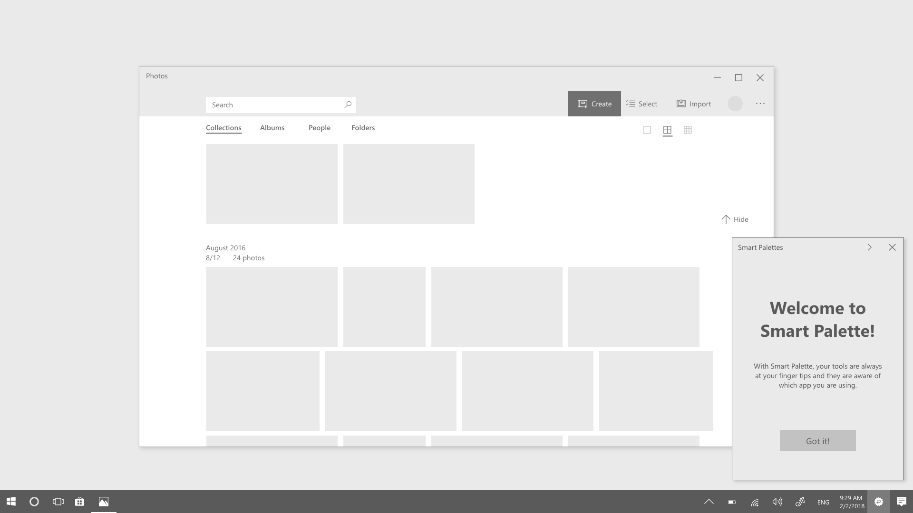

Responsibilities: Concept explorations, information architecture, interaction exploration, visual and motion design explorations
Year: 2018
Outcomes:
Three patents filed to protect Microsoft IP.
Increased HoloLens developer signup at Microsoft 2018 Build by 5%.
Smart palette is an intelligent assistant app on Windows and in HoloLens that surfaces tools and information to help the users complete their tasks.
User problems
Experiences on large form factor devices and head mounted devices such as Surface hub and HoloLens are suboptimal because the stationary nature of today’s controls sometimes makes accessing them difficult
Goals
Can be initiated from SHELL as well as the floaty control
Not tied to any host app
Can be docked inside the host app window as well anywhere on the desktop
Customizable
Tools are contextual aware
Intelligence based on single app and Sets
User opportunities
Offering ways to customize the apps’ interface helps users to maintain control over their workflows and, as a result, achieves flow.
Benjamin B. Bederson, Interfaces for Staying in the Flow, http://www.cs.umd.edu/hcil/trs/2003-37/2003-37.html

Launching Smart Palette from the task bar 3rd person view of the new experience which allows users to bring content closer then them Smart Palette working with sets